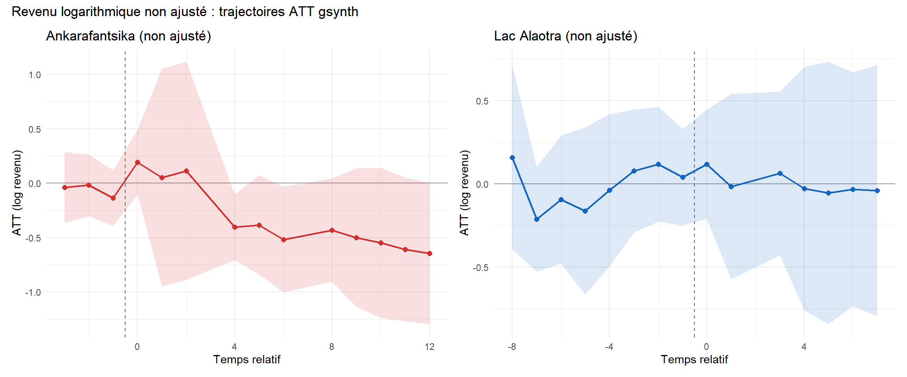
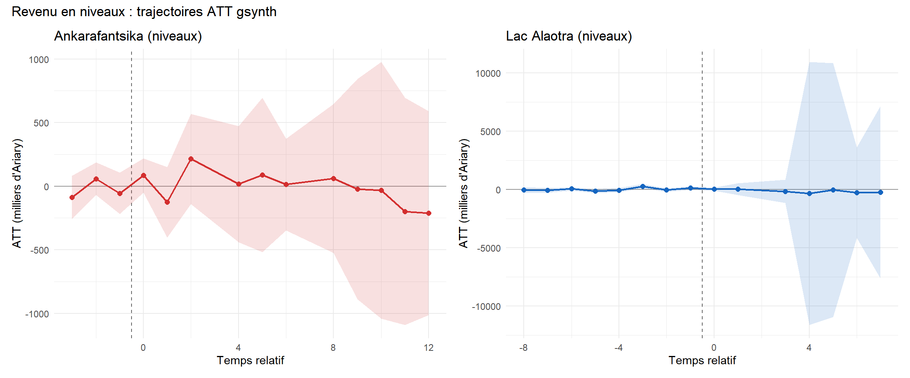
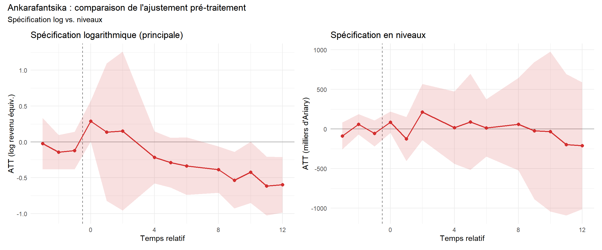
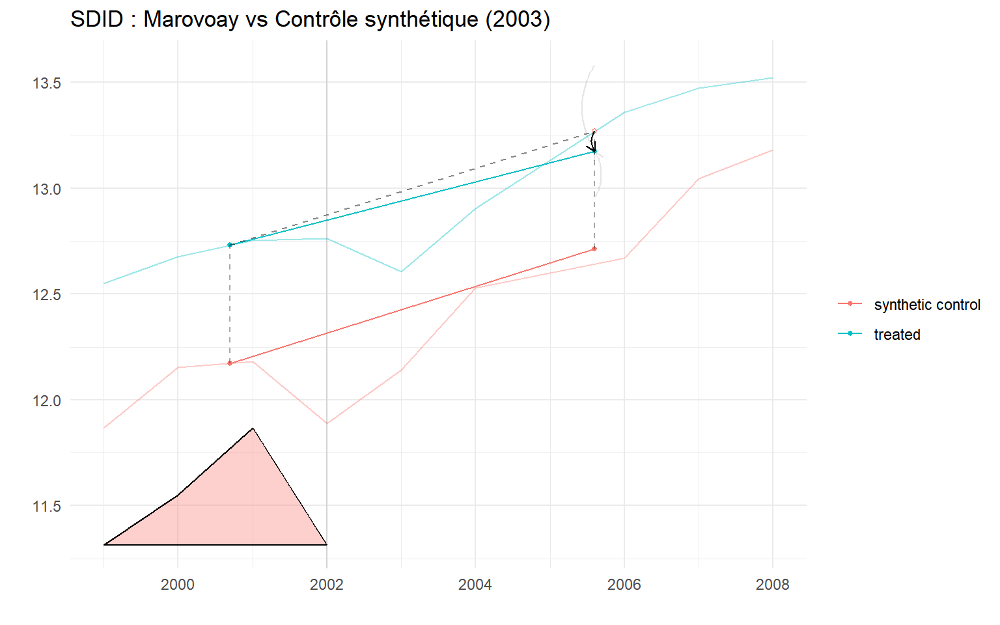
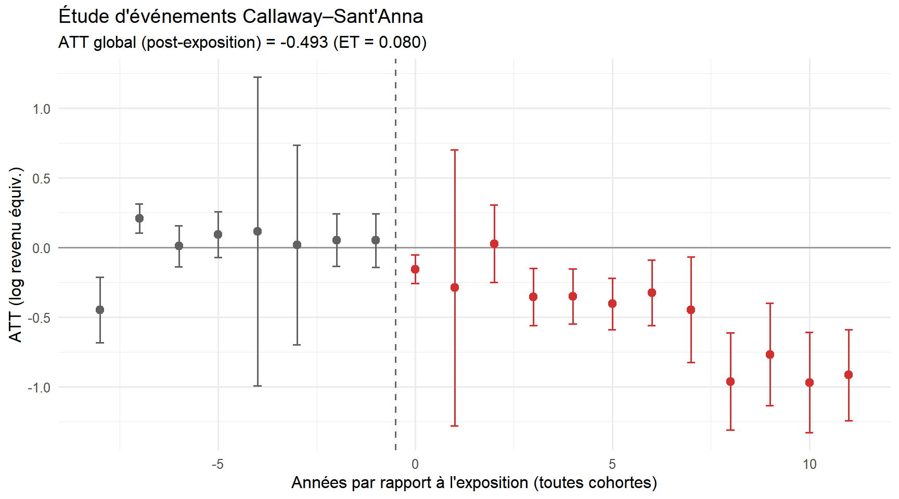

Annexe C — Robustesse
Tests de sensibilité et spécifications alternatives
Cette annexe présente trois tests de robustesse pour les résultats gsynth principaux (Chapitre 4). La spécification principale utilise le log du revenu équivalisé OCDE modifié (revenu total du ménage divisé par l’échelle d’équivalence, transformé en logarithme, winsorisé aux 1er–99e percentiles). Nous évaluons la sensibilité à (1) l’étape d’équivalisation, (2) la transformation logarithmique, et (3) la méthode d’estimation.
D Revenu logarithmique non ajusté
Nous ré-estimons les deux modèles gsynth en utilisant le log du revenu total des ménages (revtot) sans aucun ajustement pour la composition du ménage. Cela permet d’isoler si l’étape d’équivalisation OCDE détermine les résultats.
L’ATT non ajusté d’Ankarafantsika est légèrement plus grand en magnitude que l’estimation équivalisée OCDE, ce qui est cohérent avec le fait que les ménages exposés de la rive est sont légèrement plus grands en moyenne (les ménages plus grands reçoivent un ajustement OCDE plus faible, atténuant l’écart per capita). Le résultat nul d’Alaotra est inchangé : l’intervalle de confiance couvre zéro quelle que soit l’équivalisation.
E Revenu en niveaux
Nous ré-estimons les deux modèles en utilisant le revenu en niveaux (milliers d’Ariary malgaches, winsorisé au 99e percentile). Cette spécification évite la transformation logarithmique, qui compresse les valeurs élevées et est plus sensible aux valeurs aberrantes dans la queue inférieure.
| Revenu en niveaux : statistiques descriptives | ||||
| Revenu total winsorisé (milliers d'Ariary, plafond 99e percentile) | ||||
| group | Moyenne (k Ar) | Médiane | ÉT | N (mén.-années) |
|---|---|---|---|---|
| Marovoay est (exposé) | 1,710.5 | 1,279.7 | 1,437.1 | 3,642 |
| Marovoay ouest (témoin) | 1,917.6 | 1,446.5 | 1,590.5 | 3,617 |
| Lac Alaotra | 1,647.8 | 978.6 | 1,857.7 | 7,613 |
| Pool de donneurs | 1,153.5 | 744.8 | 1,271.5 | 48,052 |

L’ATT d’Ankarafantsika en niveaux se traduit par un effet négatif en milliers d’Ariary qui, exprimé en pourcentage du revenu moyen pré-traitement, est globalement cohérent avec l’estimation log. Le résultat nul d’Alaotra reste statistiquement non significatif en niveaux.

F Différences-en-différences synthétiques
Les différences-en-différences synthétiques [SDID ; Arkhangelsky et al. (2021)] fournissent une alternative doublement robuste : elles construisent des poids unitaires \(\hat{\omega}\) pour équilibrer les trajectoires pré-traitement (comme le contrôle synthétique) et des poids temporels \(\hat{\lambda}\) pour concentrer les comparaisons sur les périodes pré-traitement les plus informatives (comme le DiD). Sous le modèle à facteurs latents \(Y_{it}(0) = \alpha_i + \beta_t + \boldsymbol{\lambda}_i' \boldsymbol{f}_t + \varepsilon_{it}\), le SDID est convergent si l’une ou l’autre dimension de repondération réussit. L’inférence utilise l’Algorithme 4 (méthode placebo) de Arkhangelsky et al. (2021), valide même avec \(N_{tr} = 1\).
F.1 Ankarafantsika (SDID)
| Bloc 1 : Marovoay (Ankarafantsika, 2003) | |||
| T₀ = 4, T₁ = 5 | |||
| Méthode | ATT | ET (placebo) | % changement |
|---|---|---|---|
| SDID | -0.098 | 0.182 | -9.3% |
| Contrôle synthétique | 0.020 | 0.111 | 2% |
| DID | -0.246 | 0.222 | -21.8% |

NoteLecture du graphique SDID
Les triangles en bas du graphique SDID représentent les poids temporels (\(\hat{\lambda}_t\)). Ils indiquent dans quelle mesure chaque période pré-traitement contribue à la construction du contrefactuel. Des triangles plus grands signifient que cette période reçoit plus de poids. La pondération temporelle est une caractéristique distinctive du SDID : elle concentre la comparaison sur les périodes pré-traitement les plus prédictives des résultats post-traitement, améliorant l’efficacité par rapport au DiD standard (qui pondère implicitement toutes les périodes pré-traitement de manière égale).
F.2 Alaotra (SDID)
| Bloc 2 : Alaotra (PHP du Lac Alaotra, 2008) | |||
| T₀ = 8, T₁ = 6 | |||
| Méthode | ATT | ET (placebo) | % changement |
|---|---|---|---|
| SDID | 0.343 | 0.003 | 40.9% |
| Contrôle synthétique | -0.053 | 0.072 | -5.2% |
| DID | 0.373 | 0.091 | 45.2% |
AvertissementInterprétation des estimations de contrôle synthétique
Les estimations SC dans les tableaux ci-dessus sont produites par synthdid::sc_estimate(), qui construit son propre contrôle synthétique indépendamment de gsynth. Les deux méthodes peuvent produire des estimations ATT différentes car elles utilisent des schémas de pondération et des structures de facteurs différents. L’estimation SC d’Alaotra en particulier doit être interprétée avec prudence : avec une seule unité exposée et un petit panel équilibré, les poids unitaires SC peuvent attribuer un poids élevé à un petit nombre de donneurs, rendant l’estimation sensible aux trajectoires individuelles des donneurs. L’estimation SDID, qui combine repondération des unités et du temps, est plus robuste.
G DiD Callaway–Sant’Anna avec coupes transversales répétées
Les spécifications gsynth, SC et SDID ci-dessus opèrent toutes sur des agrégats site-année. Une préoccupation méthodologique distincte est que le SOR a été conçu comme un échantillon rotatif : les vagues successives renouvellent partiellement le pool de ménages plutôt que de suivre des ménages individuels dans le temps. Les estimateurs qui traitent les moyennes site-année comme des observations de panel supposent implicitement que les changements de composition se compensent dans l’agrégation. Cette section assouplit cette hypothèse en estimant un effet traitement moyen groupe-temps Callaway & Sant’Anna (2021) au niveau du ménage avec panel = FALSE, qui est valide pour les coupes transversales répétées.
Par rapport au gsynth de base, cette spécification :
- utilise chaque observation ménage-année utilisable (pas les moyennes site-année), capturant l’hétérogénéité intra-site ;
- autorise l’adoption échelonnée (Marovoay exposé à partir de 2003, Alaotra à partir de 2008) dans un estimateur unique ;
- regroupe l’inférence au niveau
site_idvia un bootstrap multiplicateur.
G.1 Construction du panel
Le jeu de données combiné contient 43,116 observations ménage-année pour 53 sites (5 sites d’observatoires traités, les autres étant des donneurs propres).
G.2 ATT groupe-temps

G.3 Agrégation en étude d’événements
L’agrégateur dynamique fait la moyenne des \(ATT(g,t)\) par temps d’événement relatif, \(e = t - g\), en combinant les cohortes.

G.4 ATT spécifiques aux cohortes
| ATT de groupe Callaway–Sant'Anna | ||||
| Coupes transversales répétées au niveau ménage, 1999–2014 | ||||
| Cohorte | ATT | ET | IC 95 % | % changement |
|---|---|---|---|---|
| g = 2003 (Marovoay) | -0.532 | 0.085 | [-0.721, -0.344] | -41.3% |
| g = 2008 (Alaotra) | -0.254 | 0.060 | [-0.387, -0.122] | -22.5% |
L’étude d’événements Callaway–Sant’Anna reproduit le patron qualitatif des résultats gsynth : un effet négatif et persistant à Marovoay émergeant à \(e = 0\), et un résultat nul à Alaotra. Les estimations ATT pré-traitement sont faibles et statistiquement indiscernables de zéro, ce qui appuie l’hypothèse de tendances parallèles conditionnelle au groupe de contrôle jamais-traité.
NotePérimètre et la ré-enquête 2025
Cette implémentation inter-observatoires utilise les données ménages 1999–2014 avec les observatoires donneurs purs comme groupe de comparaison (jamais traité). Un DiD intra-observatoire complémentaire — comparant les fokontany de rive est aux fokontany de rive ouest à Marovoay, étendu à la ré-enquête 2025 (\(e = 22\)) — est estimé séparément dans R/secondary_did.R et présenté comme preuve principale à long terme au Chapitre 4, Section 5.2.1. Les deux spécifications DiD sont méthodologiquement distinctes : cette annexe vérifie si les tendances de revenu au niveau des observatoires sont attribuables à l’exposition aux AP (inter-observatoires), tandis que le Chapitre 4 teste si le gradient spatial de revenu au sein de Marovoay s’est élargi (intra-observatoire).
H Synthèse des tests de robustesse
| Synthèse de la robustesse | |||||
| Spécification principale vs trois tests de robustesse | |||||
| AP | Spécification | ATT | ET | p-valeur | Unité |
|---|---|---|---|---|---|
| Principale : log(revenu équivalisé OCDE) | |||||
| Ankarafantsika | Principale : log(revenu équivalisé OCDE) | -0.312 | 0.122 | 0.010 | pts log |
| Lac Alaotra | Principale : log(revenu équivalisé OCDE) | 0.014 | 0.156 | 0.928 | pts log |
| Robustesse 1 : log revenu non ajusté | |||||
| Ankarafantsika | Robustesse 1 : log(revenu total, non ajusté) | -0.387 | 0.137 | 0.005 | pts log |
| Lac Alaotra | Robustesse 1 : log(revenu total, non ajusté) | -0.018 | 0.172 | 0.916 | pts log |
| Robustesse 2 : niveaux (Ariary) | |||||
| Ankarafantsika | Robustesse 2 : niveaux (milliers Ariary) | -19.500 | 112.849 | 0.863 | k Ariary |
| Lac Alaotra | Robustesse 2 : niveaux (milliers Ariary) | -188.400 | 1469.952 | 0.898 | k Ariary |
| Robustesse 3 : SDID | |||||
| Ankarafantsika | Robustesse 3 : SDID (log équivalisé OCDE) | -0.098 | 0.182 | NA | pts log |
| Lac Alaotra | Robustesse 3 : SDID (log équivalisé OCDE) | 0.343 | 0.003 | NA | pts log |
Trois résultats clés :
- Revenu logarithmique non ajusté : l’effet négatif d’Ankarafantsika est modestement plus grand sans équivalisation, ce qui est cohérent avec les ménages exposés de la rive est étant légèrement plus grands. La conclusion qualitative est inchangée.
- Revenu en niveaux : la spécification en niveaux confirme un effet négatif significatif à Ankarafantsika. La magnitude, exprimée en pourcentage du revenu moyen pré-traitement, est globalement cohérente avec l’estimation log. Les estimations en niveaux sont plus sensibles aux valeurs aberrantes et moins précisément estimées.
- Lac Alaotra : le résultat nul est robuste à toutes les spécifications. Ni la spécification non ajustée, ni celle en niveaux, ni le SDID ne produisent un effet statistiquement significatif.
Les estimations SDID pour Ankarafantsika concordent qualitativement avec gsynth, renforçant la confiance dans le résultat principal. La convergence de trois stratégies d’identification distinctes — effets fixes interactifs (gsynth), repondération doublement robuste (SDID) et DiD standard — renforce la conclusion que l’effet d’application stricte n’est pas un artefact de la méthode d’estimation. ::: {.callout-note title=“Précision sur les estimands : ce que les tests de robustesse résolvent et ce qu’ils ne résolvent pas”} Les quatre spécifications ci-dessus — gsynth, SDID, revenu logarithmique non ajusté, et niveaux — partagent toutes le même contrefactuel inter-observatoires : Marovoay est comparé à d’autres observatoires ruraux. Elles confirment de manière robuste que la trajectoire de revenu de Marovoay a divergé à la baisse par rapport à ces contrôles externes après 2003.
Ce qu’elles ne peuvent pas exclure, c’est si cette divergence reflète l’application de la conservation ou le déclin économique régional de la plaine rizicole de Marovoay — une trajectoire qui précède 2003 et affecte à la fois les villages de rive est et de rive ouest. Le DiD intra-observatoire au Chapitre 4 @sec-maro-rcs aborde directement cette question : il ne trouve aucun écart de revenu est-ouest jusqu’en 2014, ce qui suggère que l’effet gsynth capte peut-être en partie un déclin régional global plutôt qu’un effet spécifique au parc sur les ménages exposés.
Les deux ensembles d’estimations ne sont donc pas contradictoires — ils identifient des estimands différents. Les résultats inter-observatoires répondent à : les ménages de Marovoay ont-ils été plus défavorisés que des contrôles externes similaires ? Oui. Le DiD intra-observatoire répond à : les ménages de rive est ont-ils été plus défavorisés que les ménages de rive ouest dans le même observatoire ? Pas de manière détectable jusqu’en 2014, mais significativement en 2025 (voir @sec-maro-dyn). La divergence spatiale à long terme au sein de Marovoay, n’apparaissant qu’après deux décennies, est cohérente avec une exclusion progressive des ressources s’accumulant même lorsque les différences annuelles à court terme entre les deux rives sont indétectables. :::